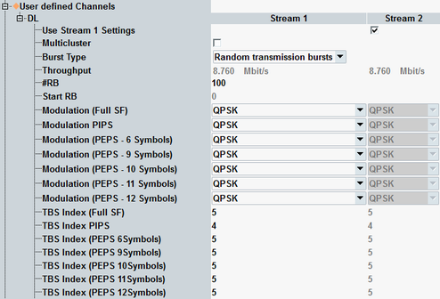
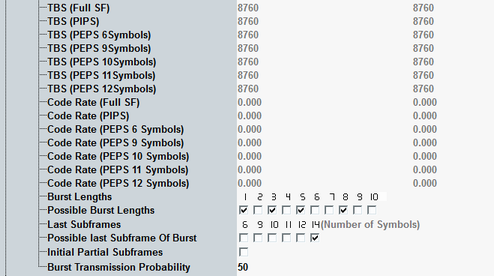

The parameters in this section configure user-defined channels for LAA, with a random burst configuration. Options R&S CMW-KS510 and -KS514 are required.
To display these settings, enable LAA and select the scheduling type "User-Defined Channels", see "Frame Structure" and "Scheduling Type".
To configure the channels, proceed in the following order:
Set the burst type to "Random transmission bursts".
If you want to use multi-cluster, enable it.
Select the modulation types.
Configure the remaining settings in any order.
For valid parameter combinations and background information, see "Random transmission bursts".
You can configure the settings per SCC with LAA.


Multi-cluster allocation is only possible for resource allocation type 0 (resource block groups). Option R&S CMW-KS512 is required.
To use DL multi-cluster allocation, enable the checkbox. The button "RB Clusters" is displayed. Press the button to open the following configuration window.

In this dialog box, you can enable or disable each individual RBG via the checkboxes.
Remote command:This section describes "Random transmission bursts".
See also "User-Defined Ch. for LAA, Fixed Bursts".
Remote command:Displays the expected average maximum throughput in Mbit/s. The value is calculated per downlink stream.
Remote command:- "#RB" selects the number of allocated resource blocks.
"Start RB" specifies the number of the first allocated resource block.
For DL multi-cluster allocation, see "Multicluster". - "Modulation (...)" selects the modulation type and influences the allowed TBS indices. 256-QAM requires option R&S CMW-KS504/-KS554.
"TBS Index (...)" selects the TBS index. The resulting transport block size "TBS (...)" in bits is displayed.The settings are configurable for:– Subframes with full allocation "(Full SF)" – First subframes with partial allocation "(PIPS)" – Last subframes with n allocated symbols "(PEPS n Symbols)"
Effective channel code rate, i.e. the number of information bits (including CRC bits) divided by the number of physical channel bits on PDSCH.
The information is displayed per subframe type (full allocation, first SF partial allocation, last SF with n symbols).
Remote command:Selects allowed values for the number of subframes in a burst. For each burst, the random procedure selects one of the enabled values.
The number above each checkbox indicates the number of subframes enabled by the checkbox.
Remote command:Selects allowed values for the number of allocated OFDM symbols in the last subframe of a burst. For each burst, the random procedure selects one of the enabled values.
The number above each checkbox indicates the number of symbols enabled by the checkbox.
Remote command:Allows partial allocation for the first subframe of a burst.
If the checkbox is enabled, the probability for full allocation and partial allocation is equal. Partial allocation means that only the second slot is allocated (OFDM symbol 7 to 13).
Remote command:Probability for the decision, whether a burst is transmitted or whether muting is applied for the burst duration.
Remote command: